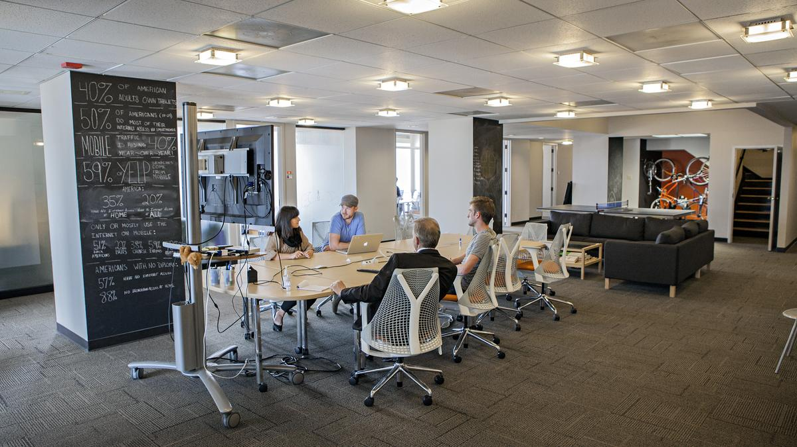
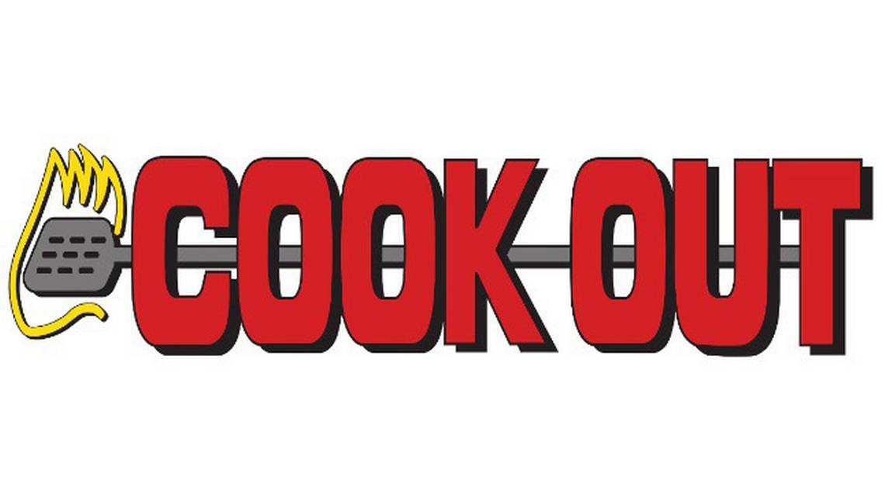

Going on the field trip to Archer Malmo was definitely a learning experience that I was glad to be a part of. It may have been a really short trip and not much of a really planned out presentation, mainly because the guy who was going to give the presentation had to have someone else fill in his place because he was having a private meeting at the time, but I still was able to learn a lot from the presenter. One of my favorite parts of the trip was when the presenter was showing us the web-frame of the valor site and then a new frame in a side-by-side comparison. Just seeing the behind-the-scene work of design on the website was fascinating to me and was something that I have never seen before in my entire life. When it comes to the filler Greek text it is something that seems to be used by many web designers, but I personally do not like using the filler text. It throws me off on how I am going to build the layout of my site because I usually base my layout off of the basic text I write in my code. Seeing how he used the filler text has made me understand it more and hopefully next time I need to use filler text in my code for a layout, my eyes will be a lot easier on judging it.
Another part of the trip that I do not think was planned was when we went to the broadcasting floor underneath the first floor. It was kind of hard for all of us to cram in to the elevator on the trip since we could only take around 7-8 people on the elevator at a time. Once we all got to the lower level floor, we went in to the broadcasting room and it was such a big and wide room. The floor was pure white and one of the walls was solely green, to act as a green screen. It looked like nothing I would picture a broadcasting room to look like, but had lots of equipment in there specifically for broadcasting their advertising commercials and videos.
Now, the most important part of this trip: Cookout. The bus ride there was beautiful. We saw a lot of downtown Memphis and Chance learned that the Memphis Redbirds is our baseball team, AND IS NOT MADE UP. Anyhow, when we first arrived at Cookout we were ready to get out of the bus so we all stood up, and the bus driver put that junt in reverse SO QUICKLY. We were praising the lord that this event happened BEFORE we went in to Cookout, because if it was after we would have thrown up everywhere. Once we were in Cookout, no one else came in. We had a line going back to almost the back of the food place and lots of orders for the cooks to make.
Overall the trip was great and I learned a lot of things about web design and would love to go on another trip like the one we went on! Archer Malmo was very kind to let us take pictures and see some of the projects they are working on.